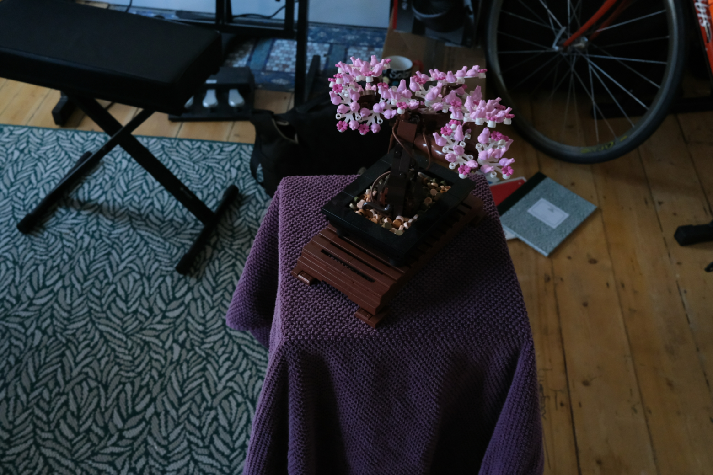
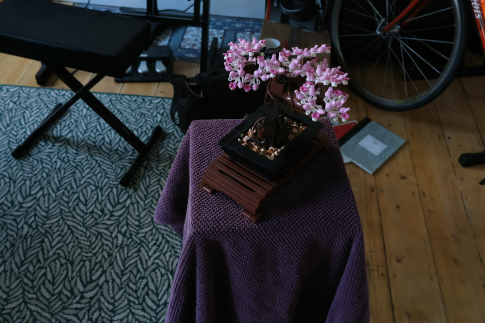
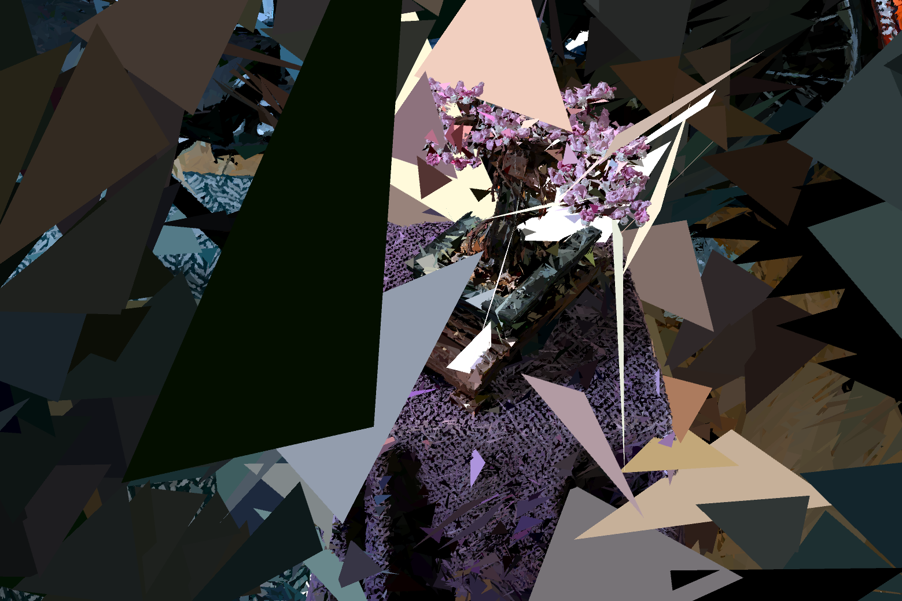
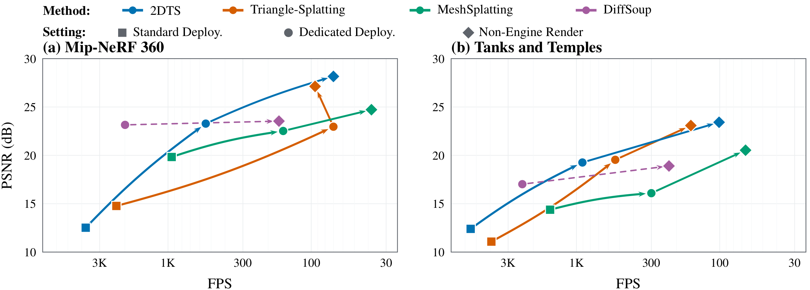
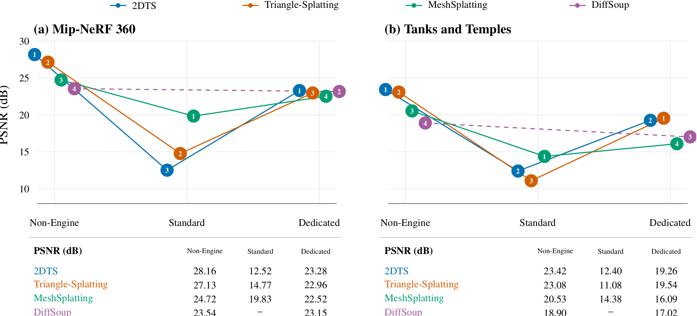

The Deployment Gap
Deploying soup methods as standard opaque meshes in a game engine causes catastrophic visual collapse (up to 15.6 dB PSNR drop). MeshSplatting loses the least due to indexed Delaunay geometry.
The Fidelity-Speed Tradeoff
Dedicated Unity shaders recover 2.7–10.8 dB PSNR by retaining soft coverage and alpha compositing, but suffer a 5×–33× framerate slowdown due to depth sorting overhead.
Topological Illusion
Shared vertex indexing does not ensure a valid manifold mesh. Structural audits reveal 18–28% non-manifold edges, 65–87% non-manifold vertices, and hundreds of thousands of disconnected shards.
Unified Engine Pipeline
Includes a universal .triasset serialization layer and production Unity shaders supporting continuous alpha, view-dependent SH, and in-shader neural Micro-MLP texture decoding.
Abstract
Triangle- and mesh-based neural rendering aims to bridge neural scene representations and existing graphics engines (e.g., Unity, Blender) by leveraging triangle primitives compatible with standard rasterization hardware. There have been several such methods driven by parallel efforts, developed and evaluated under inconsistent settings, with little or no comparison with each other; critically, most have never used graphics engines for evaluation nor considered deployability in practice — significantly undermining the objective and motivation.
To address these issues, we introduce MeshSuite, the first benchmark of its kind to enable systematic evaluation of graphics-engine deployment and Non-Engine Render for triangle- and mesh-based neural rendering methods. Importantly, our deployment protocol includes two engine deployment settings:
- (1) Standard Deployment — a conventional opaque mesh pipeline with vertex colors and hardware Z-buffering;
- (2) Dedicated Deployment — method-specific engine implementations supporting retained appearance and compositing features (e.g., alpha blending), taking into account individual model characteristics.
For mesh splatting, we further propose a structural audit of exported surfaces, diagnosing topological and geometric integrity toward downstream graphics assets. From this benchmark, we validate that rasterizability is merely part of graphics readiness, and highlight the significance of assessing the graphics engine deployment process.
4-Way Synchronized Image Split Comparison
Comparing novel-view synthesis across Standard Deployment → Dedicated Deployment → Non-Engine Render → Ground Truth. Drag the vertical divider lines to dynamically adjust the visible split regions!



The Three Evaluation Settings
Systematically dissecting the transition from research CUDA kernels to engine rasterization.
1. Non-Engine Render
Evaluated directly using each method's official source research renderer (differentiable CUDA kernels). Serves as the upper-bound fidelity benchmark.
- Source paper rasterization
- Full continuous opacity
- Not usable in game engines
2. Standard Deployment
Converts trained models to conventional opaque meshes with static vertex colors rendered using standard hardware Z-buffering in Unity.
- Blazing fast (up to 5,480 FPS)
- 100% plug-and-play CG asset
- Massive quality loss (8–15 dB drop)
3. Dedicated Deployment
Customized engine shaders in Unity implementing method-specific appearance (view-dependent SH, soft coverage, order-dependent alpha blending).
- Recovers 2.7–10.8 dB PSNR
- Micro-MLP shader decoding
- 5×–33× slower than Standard
Engine Support and Retained Rendering Features (Table 1)
| Method | Standard Deployment | Dedicated Deployment (Method-Aware Unity Shaders) | |||||
|---|---|---|---|---|---|---|---|
| Support | Appearance | View-dep. SH | Opacity | Soft Coverage | Depth Sort | Appearance Model | |
| 3DGS (Reference) | N/A | — | N/A | — | — | — | — |
| 2DGS (TSDF Mesh) | Fallback | baked color | N/A | — | — | — | — |
| 2DTS | Fallback | baked SH-DC | SH (Spherical Harmonics) | ||||
| Triangle-Splatting | Fallback | baked SH-DC | SH (Spherical Harmonics) | ||||
| MeshSplatting | Fallback | baked SH-DC | — | SH (Spherical Harmonics) | |||
| DiffSoup | N/A | Requires decoder | — | — | — | In-Shader Micro-MLP | |
Benchmark Leaderboards
Standardized novel-view synthesis, throughput, memory allocation, and geometry quality.
| Setting | Method | Type | PSNR ↑ | SSIM ↑ | LPIPS ↓ | Throughput (FPS) ↑ | GPU Latency (P50 ms) ↓ | VRAM / Alloc ↓ |
|---|---|---|---|---|---|---|---|---|
| Non-Engine Render | 3DGS (Reference) | Gaussian Splats | 27.21 | 0.815 | 0.214 | 109 | — | — |
| 2DGS (Reference) | Surface Gaussians | 26.79 | 0.796 | 0.252 | 38 | — | — | |
| 2DTS | Triangle Soup | 28.16 | 0.841 | 0.215 | 70 | — | 10,069 MiB (Train) | |
| Triangle-Splatting | Triangle Soup | 27.13 | 0.812 | 0.227 | 94 | — | 18,901 MiB (Train) | |
| DiffSoup | Neural Texture Soup | 23.54 | 0.689 | 0.322 | 168 | — | 23,484 MiB (Train) | |
| MeshSplatting | Indexed Mesh | 24.72 | 0.729 | 0.365 | 38 | — | 23,134 MiB (Train) | |
| Standard Deployment (Unity) | 2DGS (TSDF) | Opaque Mesh | 12.70 | 0.311 | 0.594 | 2,778 | 0.4 ms | 54 MiB |
| 2DTS | Opaque Soup Shards | 12.52 | 0.311 | 0.661 | 3,754 | 0.3 ms | 54 MiB | |
| Triangle-Splatting | Opaque Soup Shards | 14.77 | 0.246 | 0.656 | 2,294 | 0.5 ms | 54 MiB | |
| MeshSplatting | Delaunay Mesh | 19.83 | 0.491 | 0.518 | 943 | 1.1 ms | 54 MiB | |
| Dedicated Deployment (Unity) | 2DTS | Custom Alpha Splat | 23.28 | 0.699 | 0.313 | 545 | 2.1 ms | 1,140 MiB |
| Triangle-Splatting | Custom Window Splat | 22.96 | 0.695 | 0.301 | 70 | 3.8 ms | 1,559 MiB | |
| DiffSoup | Compute Micro-MLP | 23.15 | 0.647 | 0.331 | 1,995 | 0.5 ms | 288 MiB | |
| MeshSplatting | Indexed Alpha Mesh | 22.52 | 0.589 | 0.457 | 157 | 6.4 ms | 927 MiB |
Quality vs. Efficiency Trade-Off
How image fidelity transitions to framerate across Standard, Dedicated, and Native renderers.

Fidelity vs. Throughput Trajectories
Standard Deployment hits thousands of FPS (up to 5,480 FPS) via GPU rasterization, but at the cost of drastic visual drops. Dedicated Deployment shifts along the Pareto frontier, restoring near-native PSNR while operating at 70–2,388 FPS.

Deployment Gaps Across Datasets
Illustrating the adaptation gap (ΔQadapt), portability gap (ΔQport), and overall deployment gap (ΔQdeploy). MeshSplatting displays the smallest portability gap due to shared vertex geometry.
Structural Audit of Exported Meshes
Does explicit triangle indexing ensure a viable 3D asset for physics, animation, and downstream CG pipelines?
Mesh Diagnostics for MeshSplatting across All Benchmark Datasets (Table 5)
| Dataset | Local Reuse | Local Structure Defect Rate | Global Connectivity & Fragmentation | |||||
|---|---|---|---|---|---|---|---|---|
| V / F Ratio | Valence | Boundary Edges | Non-Manifold Edges ↓ | Non-Manifold Verts ↓ | LCC Faces ↑ | LCC Area ↑ | Components (K) ↓ | |
| Mip-NeRF 360 | 0.523 | 6.49 | 45.4% | 17.8% | 65.2% | 69.9% | 68.9% | 712.9 K |
| Tanks & Temples | 0.516 | 6.49 | 46.1% | 18.2% | 66.5% | 69.9% | 66.6% | 442.8 K |
| DTU | 0.428 | 7.36 | 41.2% | 22.2% | 72.7% | 76.9% | 77.5% | 43.3 K |
| NeRF-Synthetic | 0.339 | 8.59 | 37.2% | 28.4% | 87.3% | 80.4% | 80.4% | 65.8 K |
Unity Engine Integration & Shaders
Exporting feature-preserving .triasset formats and executing custom rendering passes.
MethodSpecificSplat.shader
Procedural Splatting Shader
Implements differentiable window evaluations, view-dependent spherical harmonics, and ordered multi-pass alpha blending directly in Unity's graphics pipeline.
MeshSplatIndexedMesh.shader
Indexed Mesh Shader
Consumes shared vertex buffers and face index buffers with per-vertex spherical harmonics colors, bypassing redundant vertex transmissions.
DiffSoupMetal.shader
In-Shader Micro-MLP Decoder
Evaluates neural texture latents inside a custom compute shader on Metal/Vulkan, executing lightweight MLP forward passes in real-time at ~2,000 FPS.
StandardVertexColorRaw.shader
Standard Opaque Baseline
Evaluates conventional game-engine opaque mesh rendering with static vertex colors and hardware Z-buffering for standard deployment comparisons.
3-Way Synchronized Video Split Comparison
Real-time camera orbit videos rendered across Standard Deployment → Dedicated Deployment → Non-Engine Render. Drag the vertical divider lines to dynamically adjust the visible split regions!
Installation & CLI Usage
Reproduce training, export .triasset packages, and profile framerates in Unity.
# Clone the unified benchmark repository
git clone https://github.com/prinasi/MeshSuite.git
cd MeshSuite
# Option 1: Conda Environment (Recommended)
conda env create -f environment.yml
conda activate msbench
# Option 2: Pip editable install with compiled CUDA rasterizers
pip install -e ".[dev,cuda]" --no-build-isolation
BibTeX
@article{zhang2026meshsuite,
title = {MeshSuite: A Unified Benchmark for Triangle- and Mesh-Based Neural Rendering},
author = {Zhang, Kaixuan and Li, Minxian and Ren, Mingwu and Zhu, Xiatian},
journal = {arXiv preprint arXiv:2609.01306},
year = {2026},
url = {https://arxiv.org/abs/2609.01306}
}